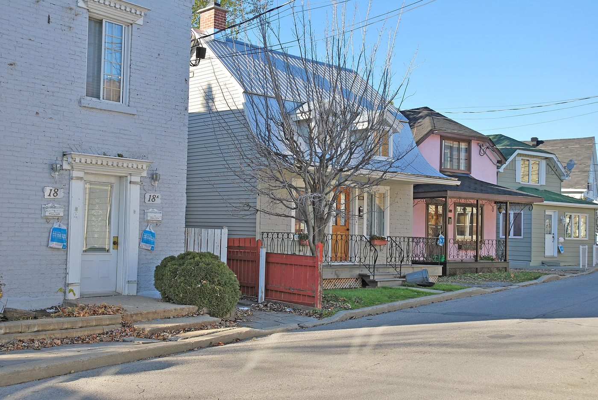
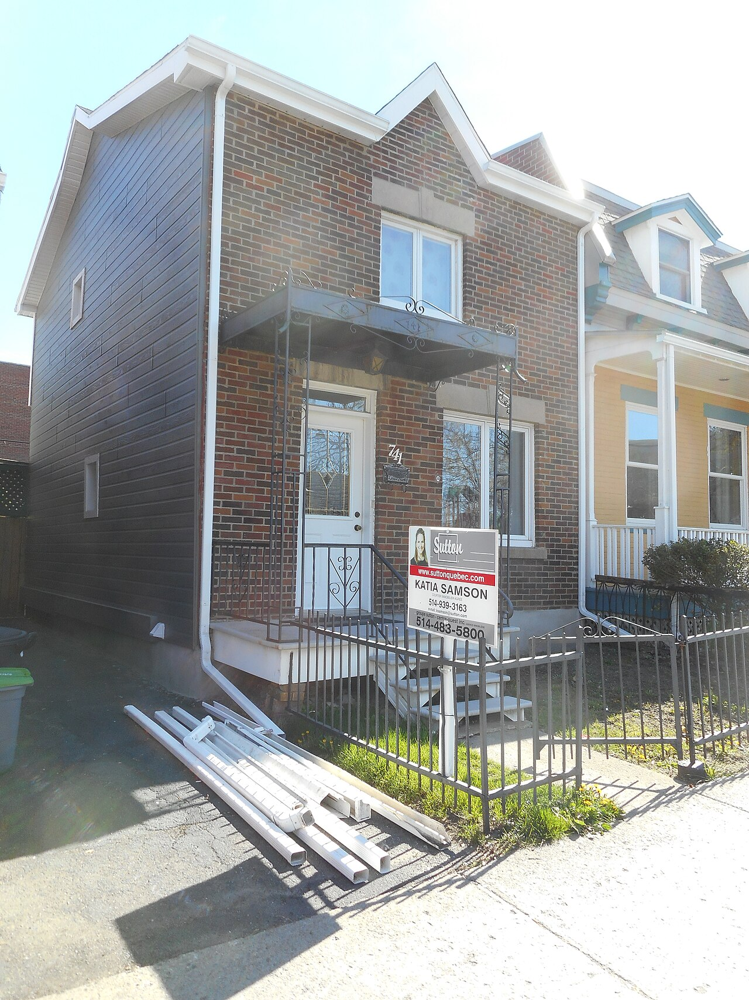

| Place | Local name | Phase years | Storeys | Roof | Window | Cladding | Garage |
|---|---|---|---|---|---|---|---|
| Mercier–Hochelaga-Maisonneuve (borough of Montréal) | Village house of Longue-Pointe La maison villageoise de Longue-Pointe (maison en carré de bois) | 1670 – 1845 | 1.5 | – | vertical | wood-clapboard, wood-shingle, clay-brick | none |
| Sainte-Anne-de-Bellevue | Two-storey clapboard village house of the îlot villageois La maison villageoise en clin du noyau villageois | 1855 – 1930 | 2 | – | – | wood | – |
| Le Sud-Ouest (Montréal) | Village house La maison villageoise | 1760 – 1825 | 1.5 | gabled | square | wood-clapboard, clay-brick | none |
| Vieux-Terrebonne | Small-gabarit vernacular village house of the Bas-de-la-Côte La maison vernaculaire villageoise du Bas-de-la-Côte | 1832 – 1900 | – | – | – | wood, clay-brick | – |
| Villeray–Saint-Michel–Parc-Extension | Rural or village house Maison rurale ou villageoise | 1750 – 1893 | 1 | mansard | vertical | wood-clapboard | none |


